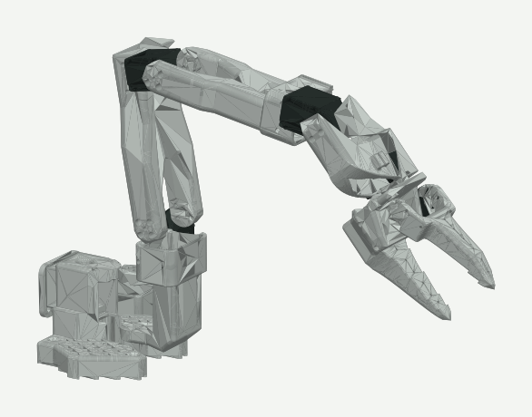

Most low-cost arm teleoperation uses a leader arm: a second, passive copy of the robot that you move by hand. That doubles the hardware and ties the operator to a desk. We wanted the operator's own body to be the controller, with nothing but a webcam, aimed at a future where a specialist could guide a robot remotely, for example in robot-assisted surgery.

The SO-101 follower arm, rendered from the URDF and STL meshes in the project repository. The browser shows the same model live as a digital twin.
From pixels to joint angles
Tracking. MediaPipe's most accurate pose model runs in the browser. The hand is only about 5% of a 720p frame, too small for reliable finger landmarks, so the app crops a square around the tracked wrist, enlarges it to 256 pixels, finds the hand there, and maps the landmarks back to the full frame.
Body angles. Shoulder lift and elbow bend come from the 3D world landmarks. Base rotation is the upper arm's azimuth relative to the line across the shoulders, so bending the elbow never steers the base.
Robot angles. The SO-101's link elevations were fitted from its URDF to within a thousandth of a degree, so each robot link copies the matching human segment: upper arm to upper link, forearm to forearm, hand to tool.
Making it steady
Raw pose estimates jitter by a degree or two every frame, and occasionally jump wildly when a landmark is misread. A servo faithfully copying that would shake. Each feature goes through its own filter chain:
A One Euro filter, which smooths heavily when the arm is still and lets fast motion through with little lag, tuned per joint.
A dead zone with hysteresis, so small wobble never reaches the robot but large moves pass smoothly.
Jump rejection: a change of more than 30 degrees in one frame is treated as a glitch and held until it persists for 0.2 s.
Per-joint confidence gating: one bad landmark freezes that joint instead of stopping the whole arm. The gripper uses a median of the last five readings so a single misread frame cannot snap the claw.
Safety when tracking is lost
A camera-driven robot has to behave sensibly when it cannot see you. The behaviour is a small state machine:
Engage. Strike the "goalpost" pose (upper arm out, forearm up) and hold it for one second to take control. Nothing moves before that.
Hold. If tracking drops, the arm stops where it is instead of chasing noise.
Resume. When you come back and put your hand where the robot's hand is, it re-locks and blends back in slowly.
Return home. After 10 seconds with nobody in view, the arm glides back to its home pose.
The browser also releases the robot when its tab goes to the background, since some browsers keep the camera running at full rate there. A voice coach with on-screen captions tells the operator what to do ("Step a little to your left", "I lost you. Paused."). An optional language command can trigger a gesture, but the language model can only pick a name from a fixed list, and the gesture runs at capped speed and only while nobody is driving.
Instrumented
The bridge logs every joint's target and measured angle at 10 Hz, optionally into a TimescaleDB hypertable from a background task so the 30 Hz robot loop never waits on the database. A replay page plays past sessions back, which made it possible to see exactly where tracking lag or a servo limit caused a miss.